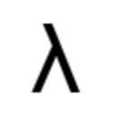
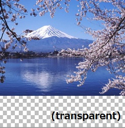
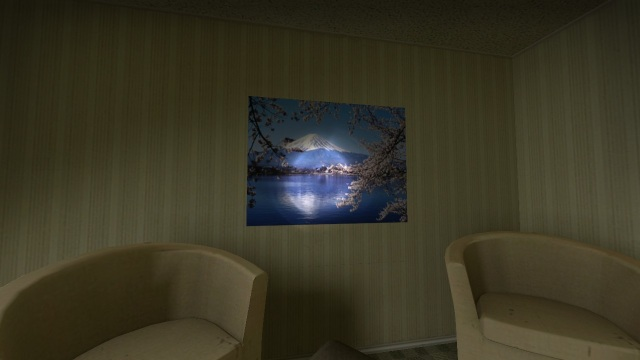

spraymaker

Valveのソースエンジン向けのスプレーを簡単に作成するためのツールです。
画像ファイルをドラッグドロップするだけで変換できます。
English
/ Japanese
詳細
256x256サイズのスプレーを生成します
透過情報付きのファイルに対応しています
高品質の圧縮フォーマットで出力します(VXT5)
高画質設定のためのVTF Flagsを自動で付加します(NOMOD, NOLOD)
200以上の画像形式の読み込みに対応しています(ImageMagickで読み込める画像であればなんでも)
元画像のアスペクト比を維持します、その際空いた場所は透過ピクセルで自動で埋めてくれます
ディレクトリが指定された場合は再帰的にすべてのファイルを変換します
実行例
(transparent)というのが実際には透明な部分になります。
元画像
変換後のVTFファイル

ゲーム内

ダウンロード
Windows7(32/64bit):
spraymaker_latest.zip
※1 他の環境ではテストしていませんが、もしかしたら動くかもしれません。
※2 動作には
ImageMagickがインストールされている必要があります。
ここをクリックしてインストールしてください
。
(ImageMagickは画像処理ソフトウェアです)